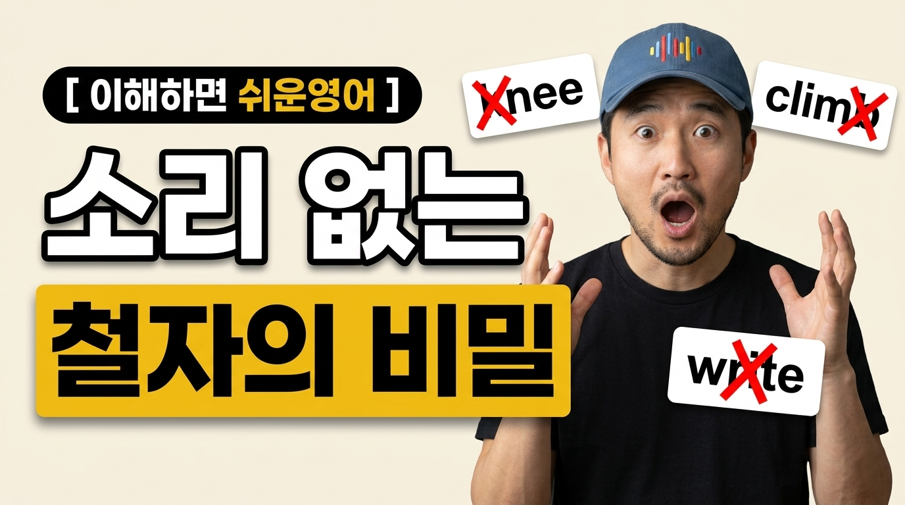
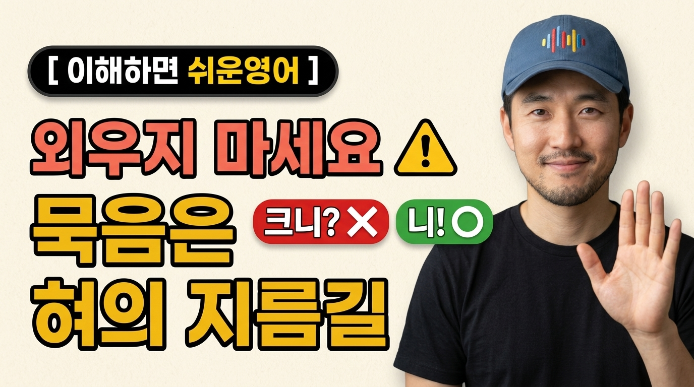

🎬 YOUTUBE UPLOAD PACKAGE · EP18
소리 없는 철자의 비밀 (KN-, -MB, WR-)
렌더링 완료 · 업로드 준비 완료
🎥 렌더링 영상 미리보기 (video.mp4)
⬇️ 다운로드
🖼️ 썸네일 시안 4종 (브랜드 모자 & 로고 완비)
A/B 테스트 활용
★ 채택 메인 (CTR 등급 A)
시안 B: 3단 서랍 & 자신감 있는 미소

A/B 후보 (CTR 등급 A-)
시안 A: 호기심/충격 반응 (X카드)

A/B 후보 (CTR 등급 B+)
시안 C: 손짓 & 주의 환기 경고
모바일 특화 (얼굴 45%)
익스트림 클로즈업: 쉿! 시크릿 제스처
🏷️ 확정 제목
저도 왜 소리 안 나는지 몰랐습니다, 혀가 편해지는 묵음 원리 | 영어 왕초보
📊 제목 A/B 테스트 시안 (CTR 진단 기준)
[A/B 테스트용 제목 시안 (대시보드 CTR 진단 완료)]
• (채택) B안 [CTR 등급: A | 8.7% ~ 11.4%]: 저도 왜 소리 안 나는지 몰랐습니다, 혀가 편해지는 묵음 원리 | 영어 왕초보
• A안 [CTR 등급: A- | 7.8% ~ 9.5%]: 여태 스펠링 다 읽으셨나요? K, B, W 소리 안 나는 진짜 이유 | 묵음 파닉스
• C안 [CTR 등급: B+ | 6.8% ~ 8.4%]: 외우지 않아도 저절로 읽힙니다, 3개 서랍으로 끝내는 묵음 법칙 | 성인 기초영어
📝 영상 설명 (타임라인 포함)
KNEE, CLIMB, WRITE, KNOCK, THUMB — 다 아는 쉬운 단어인데, 왜 K와 B와 W는 멀쩡히 써놓고 소리를 내지 않는 걸까요?
사전에 흩어진 발음기호를 일일이 예외로 외우려니 영어가 끝없는 암기처럼 느껴졌던 겁니다. 사실 이 글자들은 예외가 아니라, 원어민들도 발음하기 너무 불편해서 혀가 지름길을 택한 결과입니다.
오늘 딱 세 개의 소리 서랍(KN-, -MB, WR-)만 기억하시면, 평생 헷갈리던 묵음 단어가 사전 없이도 한눈에 읽힙니다.
「이해하면 쉬운영어」입니다. 왕초보도 이해할 수 있게, 입술과 혀의 물리적 원리로 설명합니다.
📌 오늘 배우는 내용
・철자에는 있는데 왜 소리가 나지 않을까? (자음 충돌 회피 원리)
・1번 서랍 KN-(knee, knife, know): 앞니 뒤 N으로 직행하기
・2번 서랍 -MB(climb, comb, thumb): 입술 닫고 부드럽게 '음~'으로 마무리
・3번 서랍 WR-(write, wrong, wrist): W 망설임 없이 바로 혀 당겨 R로 출발
・소리 안 나는 철자를 남겨둔 진짜 이유: 뜻을 구별해 주는 고마운 신분증(knight vs night)
・실전 퀴즈 2라운드 (새로운 단어 즉각 분류 훈련)
・자연스러운 문장 낭독 트레이닝 + 한 장 요약 치트시트
⏱️ 챕터 타임라인
0:00 KNEE, CLIMB, WRITE — 왜 소리가 안 날까?
0:30 채널 소개
0:40 사전 속 예외처럼 흩어진 묵음 철자들
0:57 반전: 예외가 아니라 혀가 지쳐서 빠진 겁니다
1:24 소리가 서로 부딪히는 물리적 원리
1:54 1번 서랍: KN- 소리 (K 지우고 N으로 출발)
2:31 2번 서랍: -MB 소리 (B 터뜨리지 않고 편안히 닫기)
3:11 3번 서랍: WR- 소리 (W 버리고 시원하게 R로 직진)
3:46 꿀팁: 소리 안 나는 글자를 남겨둔 고마운 이유 (knight vs night)
4:15 실전 퀴즈 1라운드 (3초 챌린지)
4:57 실전 퀴즈 2라운드 (스피드 챌린지)
5:25 문장으로 자연스럽게 읽기 ①
5:47 문장으로 자연스럽게 읽기 ②
6:13 한 장 요약 총정리 치트시트
6:32 엔딩
영어는 무작정 외우는 것이 아니라, 소리의 원리를 이해하는 것입니다.
구독과 좋아요는 다음 영상 제작에 큰 힘이 됩니다.
#영어발음 #파닉스 #묵음 #영어읽기 #왕초보영어 #영어공부 #영단어 #발음원리 #성인영어 #기초영어
📌 고정 댓글
📌 오늘 영상 핵심 요약 (화면 캡처 치트시트)
1. 1번 서랍 KN- (knee, knife, know) ➔ 앞의 K 버리고 앞니 뒤 N으로 바로 출발!
2. 2번 서랍 -MB (climb, comb, thumb) ➔ 뒤의 B 버리고 입술 편안히 붙여 '음~'으로 마무리!
3. 3번 서랍 WR- (write, wrong, wrist) ➔ 앞의 W 버리고 혀 뒤로 당겨 시원하게 R로 직진!
💡 질문: 여러분이 영어를 배우면서 가장 읽기 힘들었던 묵음 단어는 무엇이었나요? 댓글로 남겨주시면 다음 영상에 반영하겠습니다!
🏷️ 추천 태그
🌍
글로벌 7개국 다국어 자막 & 메타데이터 원클릭 패키지
GLOBAL EXPANSION
유튜브 알고리즘이 전 세계 시청자에게 추천할 수 있도록 한국어 음성에 맞춘 영어, 일본어, 중국어 번체, 중국어 간체, 스페인어, 베트남어 자막(.srt) 및 번역 제목/설명을 준비했습니다.
🇺🇸 English Subtitle File (.srt)
66개 전체 문장 정밀 싱크 완료 · 전 세계 시청자 및 유튜브 SEO 인덱싱용
⬇️ subtitles-en.srt 다운로드
🏷️ 영어 번역 제목
Stop Memorizing Silent Letters! The Lazy Tongue Secret of KN, MB, WR | English Phonics
📝 영어 번역 설명 (타임스탬프 챕터 포함)
KNEE, CLIMB, WRITE, KNOCK, THUMB — You see these words every day, but why on earth are K, B, and W written if they aren't pronounced at all?
Trying to memorize every silent letter as a random dictionary exception makes English feel frustrating and exhausting. But here's the secret: they aren't exceptions at all! Native speakers simply dropped them because their tongues got tired of awkward physical collisions.
With just three simple sound drawers (KN-, -MB, WR-) introduced today, you'll read these confusing silent words instantly without ever checking a dictionary again!
Welcome to 'Easy English When Understood'. We explain English through intuitive pronunciation physiology so even complete beginners can master authentic spoken English.
📌 What you will learn today
• The collision-avoidance principle: Why English letters go silent
• Drawer 1: KN- (knee, knife, know) — Drop K and launch straight from N behind upper teeth
• Drawer 2: -MB (climb, comb, thumb) — Keep lips gently closed without bursting the 'B'
• Drawer 3: WR- (write, wrong, wrist) — Forget W and drive straight into an effortless R
• The real reason silent letters survived: The invaluable ID card distinguishing meaning (knight vs night)
• 2-Round Instant Quiz Challenge (Immediate word classification)
• Real-life sentence reading & 1-page summary cheat sheet
⏱️ Chapters
0:00 KNEE, CLIMB, WRITE — Why are they silent?
0:30 Channel Introduction
0:40 The frustrating mess of dictionary exceptions
0:57 The Plot Twist: Native tongues got exhausted!
1:24 Physical principle of consonant collisions
1:54 Drawer 1: KN- (Drop K and launch into N)
2:31 Drawer 2: -MB (Close lips gently without popping B)
3:11 Drawer 3: WR- (Bypass W and drive straight into R)
3:46 Pro Tip: Why silent letters stay (knight vs night)
4:15 3-Second Real-world Quiz Round 1
4:57 Rapid-fire Quiz Round 2
5:25 Sentence Fluency Practice ①
5:47 Sentence Fluency Practice ②
6:13 1-Page Master Summary Cheat Sheet
6:32 Closing & Next Steps
#EnglishPronunciation #Phonics #SilentLetters #LearnEnglish #EnglishSpeaking #PronunciationRules #AdultPhonics #BeginnerEnglish
🇯🇵 日本語 字幕ファイル (.srt)
66개 전체 문장 정밀 싱크 완료 · 일본 영어 학습 시청자 타겟
⬇️ subtitles-ja.srt ダウンロード
🏷️ 日本語 翻訳タイトル
黙字を丸暗記するのはもうやめよう！K, B, Wが消える「なまけものの舌」の秘密 | 大人のフォニックス
📝 日本語 翻訳説明文
KNEE, CLIMB, WRITE, KNOCK, THUMB — 誰もが知っている基本単語なのに、なぜ書かれている K, B, W を全く発音しないのでしょうか？
辞書のバラバラな発音記号を見て「全部例外として暗記しなきゃ」と途方に暮れていませんでしたか？実はこれら、例外ではなくネイティブの舌が疲れすぎて自然と脱落した発音の近道なのです。
今日ご紹介する「たった3つの音の引き出し(KN-, -MB, WR-)」さえ知れば、一生迷っていた黙字単語が辞書なしでスラスラ読めるようになります。
「理解すれば簡単な英語」へようこそ。初心者でも腑に落ちるよう、発声の身体的メカニズムから分かりやすく解説します。
📌 今回のレッスン内容
・文字はあるのに発音しない理由（調音の衝突回避メカニズム）
・引き出し1：KN-(knee, knife, know) — Kを捨てて前歯の裏のNから発進
・引き出し2：-MB(climb, comb, thumb) — 唇を閉じたまま「ム〜」で優しく終了
・引き出し3：WR-(write, wrong, wrist) — Wでためらわず一気にRへ直行
・発音しない文字が現代まで残った理由：単語の意味を見分ける身分証 (knight vs night)
・3秒クイズ2ラウンド（初見単語の即答チャレンジ）
・自然なセンテンス音読トレーニング＋1枚まとめチートシート
⏱️ チャプター
0:00 KNEE, CLIMB, WRITE — なぜ音が出ないのか？
0:30 チャンネル紹介
0:40 辞書に散らばる例外に見える黙字たち
0:57 衝撃の真実：ネイティブの舌が疲れた結果だった！
1:24 音同士が衝突する物理的原理
1:54 引き出し1：KN-の音（Kを消してNで出発）
2:31 引き出し2：-MBの音（Bを破裂させず唇を閉じるだけ）
3:11 引き出し3：WR-の音（Wを捨てて気持ちよくRへ直進）
3:46 豆知識：発音しない文字を残したありがたい理由（knight vs night）
4:15 実戦3秒クイズ 第1ラウンド
4:57 実戦スピードクイズ 第2ラウンド
5:25 文章スラスラ音読 ①
5:47 文章スラスラ音読 ②
6:13 1枚完結まとめチートシート
6:32 エンディング
#英語発音 #フォニックス #大人のやり直し英語 #黙字 #発音のルール #英語初心者 #英語学習 #ネイティブ発音
🇹🇼 繁體中文 字幕檔 (.srt)
66개 전체 문장 정밀 싱크 완료 · 대만/홍콩 시청자 타겟
⬇️ subtitles-zh-tw.srt 下載
🏷️ 繁體中文 翻譯標題
別再死記默音了！K, B, W 為什麼不發音？3個發音抽屜一次搞懂 | 成人自然拼讀
📝 繁體中文 翻譯說明
KNEE, CLIMB, WRITE, KNOCK, THUMB — 這些天天看見的常用單字，為什麼拼寫明明有 K、B、W，母語者卻徹底裝作看不見？
如果以為每個單字都是無規則的例外死記硬背，學英語當然痛苦萬分。其實這些字母不是例外，而是母語者講話時舌頭太累，為了省力而發明的「生理發音捷徑」！
今天只要掌握 3 個聲音抽屜（KN-, -MB, WR-），以後看到任何默音單字，不查字典也能一眼讀對。
歡迎來到「理解就變簡單的英語」。我們從最直觀的發音生理原理出發，讓初學者也能徹底理解。
⏱️ 時間戳記
0:00 KNEE, CLIMB, WRITE — 為什麼這些字母不發音？
0:30 頻道介紹
0:40 字典裡令人頭痛的例外默音單字
0:57 驚人真相：其實是舌頭太累省掉的！
1:24 發音器官碰撞衝突的物理原理
1:54 1號抽屜：KN- 發音（扔掉 K，直接從 N 起跑）
2:31 2號抽屜：-MB 發音（雙唇自然閉合，別爆破 B）
3:11 3號抽屜：WR- 發音（忘掉 W，順暢直奔 R）
3:46 核心冷知識：不發音的字母為何必須保留？（knight vs night）
4:15 3秒實戰測驗 第1回合
4:57 極速實戰測驗 第2回合
5:25 句子流暢朗讀練習 ①
5:47 句子流暢朗讀練習 ②
6:13 一張圖精華總結複習
6:32 結語
#英語發音 #自然拼讀 #默音 #零基礎英語 #成人學英語 #英文發音規則 #Phonics
🇨🇳 简体中文 字幕文件 (.srt)
66개 전체 문장 정밀 싱크 완료 · 싱가포르/글로벌 화교 타겟
⬇️ subtitles-zh-cn.srt 下载
🏷️ 简体中文 翻译标题
别再死记默音了！K, B, W 为什么不发音？3个声音抽屉一次全搞定 | 成人自然拼读
📝 简体中文 翻译说明
KNEE, CLIMB, WRITE, KNOCK, THUMB — 这些天天看见的常用单词，为什么拼写明明有 K、B、W，母语者却彻底装作看不见？
如果以为每个单词都是无规则的例外死记硬背，学英语当然痛苦万分。其实这些字母不是例外，而是母语者讲话时舌头太累，为了省力而发明的“生理发音捷径”！
今天只要掌握 3 个声音抽屉（KN-, -MB, WR-），以后看到任何默音单词，不查字典也能一眼读对。
欢迎来到“理解就变简单的英语”。我们从最直观的发音生理原理出发，让初学者也能彻底理解。
⏱️ 时间戳
0:00 KNEE, CLIMB, WRITE — 为什么这些字母不发音？
0:30 频道介绍
0:40 字典里让人头痛的例外默音单词
0:57 惊人真相：其实是舌头太累省掉的！
1:24 发音器官碰撞冲突的物理原理
1:54 1号抽屉：KN- 发音（扔掉 K，直接从 N 起跑）
2:31 2号抽屉：-MB 发音（双唇自然闭合，别爆破 B）
3:11 3号抽屉：WR- 发音（忘掉 W，顺畅直奔 R）
3:46 核心冷知识：不发音的字母为何必须保留？（knight vs night）
4:15 3秒实战测验 第1回合
4:57 极速实战测验 第2回合
5:25 句子流畅朗读练习 ①
5:47 句子流畅朗读练习 ②
6:13 一张图精华总结复习
6:32 结语
#英语发音 #自然拼读 #默音 #零基础英语 #成人学英语 #英语发音规则 #Phonics
🇪🇸 Archivo de Subtítulos en Español (.srt)
66개 전체 문장 정밀 싱크 완료 · 스페인/중남미/미국 히스패닉 타겟
⬇️ Descargar subtitles-es.srt
🏷️ Título en Español
¡Deja de memorizar letras mudas! El secreto de la lengua perezosa para KN, MB, WR | Fonética en Inglés
📝 Descripción en Español
KNEE, CLIMB, WRITE, KNOCK, THUMB — Palabras comunes que vemos a diario, pero ¿por qué la K, la B y la W están escritas si nadie las pronuncia?
Memorizar cada letra muda como una excepción aleatoria del diccionario es frustrante. ¡Pero no son excepciones! Los hablantes nativos simplemente las eliminaron porque cansan la lengua en colisiones incómodas.
Con solo tres sencillos cajones de sonido (KN-, -MB, WR-), ¡podrás leer estas palabras al instante sin consultar el diccionario!
Bienvenidos a 'Inglés Fácil Cuando se Entiende'. Explicamos el inglés a través de la fisiología del habla para que cualquiera hable con soltura.
⏱️ Capítulos
0:00 KNEE, CLIMB, WRITE — ¿Por qué son mudas?
0:30 Presentación del canal
0:40 El dilema de las excepciones en el diccionario
0:57 Revelación: ¡A los nativos les cansaba la lengua!
1:24 El choque físico de consonantes
1:54 Cajón 1: Sonido KN- (Olvida la K y di N)
2:31 Cajón 2: Sonido -MB (Cierra los labios suavemente sin explotar la B)
3:11 Cajón 3: Sonido WR- (Pasa de la W y ve directo a la R)
3:46 Dato clave: Por qué se conservan las letras mudas (knight vs night)
4:15 Reto Quiz de 3 Segundos Ronda 1
4:57 Reto Quiz Rápido Ronda 2
5:25 Práctica de lectura en frases ①
5:47 Práctica de lectura en frases ②
6:13 Hoja de trucos resumen
6:32 Despedida
#PronunciacionIngles #FoneticaIngles #LetrasMudas #InglesDesdeCero #AprenderIngles #InglesParaAdultos
🇻🇳 Tệp Phụ Đề Tiếng Việt (.srt)
66개 전체 문장 정밀 싱크 완료 · 베트남 영어 학습자 타겟
⬇️ Tải về subtitles-vi.srt
🏷️ Tiêu Đề Tiếng Việt
Đừng học vẹt chữ câm nữa! Bí mật 'chiếc lưỡi lười' của KN, MB, WR | Phát âm tiếng Anh chuẩn
📝 Mô Tả Tiếng Việt
KNEE, CLIMB, WRITE, KNOCK, THUMB — Những từ vựng quen thuộc hằng ngày, nhưng tại sao K, B, W được viết rành rành mà người bản xứ lại không hề phát âm?
Nếu cứ coi mỗi từ là một ngoại lệ để học vẹt, bạn sẽ thấy tiếng Anh vô cùng nản. Thực chất, đây là con đường tắt giúp lưỡi và môi đỡ mệt mỏi khi nói chuyện!
Chỉ cần nhớ 3 ngăn kéo phát âm (KN-, -MB, WR-) hôm nay, bạn sẽ đọc chuẩn mọi từ câm mà không cần mở từ điển.
Chào mừng bạn đến với 'Hiểu Là Tiếng Anh Dễ Dàng'. Chúng tôi giải thích tiếng Anh bằng nguyên lý vật lý của cơ miệng để người mới bắt đầu cũng hiểu sâu sắc.
⏱️ Dấu mốc thời gian
0:00 KNEE, CLIMB, WRITE — Tại sao lại câm?
0:30 Giới thiệu kênh
0:40 Nỗi ám ảnh về từ câm trong từ điển
0:57 Sự thật bất ngờ: Người bản xứ bỏ vì mỏi lưỡi!
1:24 Nguyên lý va chạm giữa các âm thanh
1:54 Ngăn kéo 1: Âm KN- (Bỏ K, phát âm N)
2:31 Ngăn kéo 2: Âm -MB (Khép môi nhẹ nhàng, đừng bật B)
3:11 Ngăn kéo 3: Âm WR- (Quên W, kéo lưỡi đọc R)
3:46 Lý do giữ lại chữ câm: Thẻ căn cước phân biệt nghĩa (knight vs night)
4:15 Thử thách đố vui 3 giây Hiệp 1
4:57 Thử thách đố vui siêu tốc Hiệp 2
5:25 Luyện đọc câu trôi chảy ①
5:47 Luyện đọc câu trôi chảy ②
6:13 Bảng tổng kết ghi nhớ trong 1 trang
6:32 Lời kết
#PhatAmTiengAnh #HocTiengAnh #ChuCamTiengAnh #TiengAnhGiaoTiep #TuHocTiengAnh #TiengAnhChoNguoiMoiBatDau
🇰🇷 한국어 자막 파일 (.srt)
66개 전체 문장 정밀 싱크 완료 · 한국어 기본 자막
⬇️ subtitles-ko.srt 다운로드
🏷️ 한국어 원본 제목
저도 왜 소리 안 나는지 몰랐습니다, 혀가 편해지는 묵음 원리 | 영어 왕초보
📝 한국어 원본 설명
KNEE, CLIMB, WRITE, KNOCK, THUMB — 다 아는 쉬운 단어인데, 왜 K와 B와 W는 멀쩡히 써놓고 소리를 내지 않는 걸까요?
사전에 흩어진 발음기호를 일일이 예외로 외우려니 영어가 끝없는 암기처럼 느껴졌던 겁니다. 사실 이 글자들은 예외가 아니라, 원어민들도 발음하기 너무 불편해서 혀가 지름길을 택한 결과입니다.
오늘 딱 세 개의 소리 서랍(KN-, -MB, WR-)만 기억하시면, 평생 헷갈리던 묵음 단어가 사전 없이도 한눈에 읽힙니다.
「이해하면 쉬운영어」입니다. 왕초보도 이해할 수 있게, 입술과 혀의 물리적 원리로 설명합니다.
📌 오늘 배우는 내용
・철자에는 있는데 왜 소리가 나지 않을까? (자음 충돌 회피 원리)
・1번 서랍 KN-(knee, knife, know): 앞니 뒤 N으로 직행하기
・2번 서랍 -MB(climb, comb, thumb): 입술 닫고 부드럽게 '음~'으로 마무리
・3번 서랍 WR-(write, wrong, wrist): W 망설임 없이 바로 혀 당겨 R로 출발
・소리 안 나는 철자를 남겨둔 진짜 이유: 뜻을 구별해 주는 고마운 신분증(knight vs night)
・실전 퀴즈 2라운드 (새로운 단어 즉각 분류 훈련)
・자연스러운 문장 낭독 트레이닝 + 한 장 요약 치트시트
⏱️ 챕터 타임라인
0:00 KNEE, CLIMB, WRITE — 왜 소리가 안 날까?
0:30 채널 소개
0:40 사전 속 예외처럼 흩어진 묵음 철자들
0:57 반전: 예외가 아니라 혀가 지쳐서 빠진 겁니다
1:24 소리가 서로 부딪히는 물리적 원리
1:54 1번 서랍: KN- 소리 (K 지우고 N으로 출발)
2:31 2번 서랍: -MB 소리 (B 터뜨리지 않고 편안히 닫기)
3:11 3번 서랍: WR- 소리 (W 버리고 시원하게 R로 직진)
3:46 꿀팁: 소리 안 나는 글자를 남겨둔 고마운 이유 (knight vs night)
4:15 실전 퀴즈 1라운드 (3초 챌린지)
4:57 실전 퀴즈 2라운드 (스피드 챌린지)
5:25 문장으로 자연스럽게 읽기 ①
5:47 문장으로 자연스럽게 읽기 ②
6:13 한 장 요약 총정리 치트시트
6:32 엔딩
영어는 무작정 외우는 것이 아니라, 소리의 원리를 이해하는 것입니다.
구독과 좋아요는 다음 영상 제작에 큰 힘이 됩니다.
#영어발음 #파닉스 #묵음 #영어읽기 #왕초보영어 #영어공부 #영단어 #발음원리 #성인영어 #기초영어
💡 YouTube Studio 3분 등록법:
1. 유튜브 스튜디오 영상 수정 ➔ 왼쪽 [자막] 메뉴 클릭
2. [언어 추가] 클릭 후 원하는 언어(영어, 일본어, 중국어 번체, 스페인어 등) 추가
3. 각 언어의 [제목 및 설명]에 위 번역문을 복사 붙여넣고, [자막]에 위 다운로드한
1. 유튜브 스튜디오 영상 수정 ➔ 왼쪽 [자막] 메뉴 클릭
2. [언어 추가] 클릭 후 원하는 언어(영어, 일본어, 중국어 번체, 스페인어 등) 추가
3. 각 언어의 [제목 및 설명]에 위 번역문을 복사 붙여넣고, [자막]에 위 다운로드한
.srt 파일을 업로드하면 즉시 완료됩니다!
⚙️ 유튜브 Studio 필수 설정 항목
권장 예약 일시
2026-09-24(목) 20:00 KST
최종 화면 (엔드스크린) 연결
직전 편 EP17 (모음 뒤 R, Bossy R 규칙) 연결
끝 5초(6:49~6:54) 비워둠
📋 업로드 실행 체크리스트